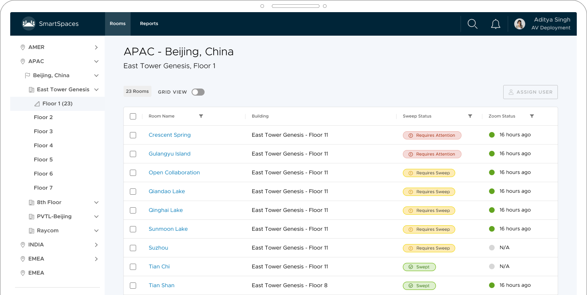
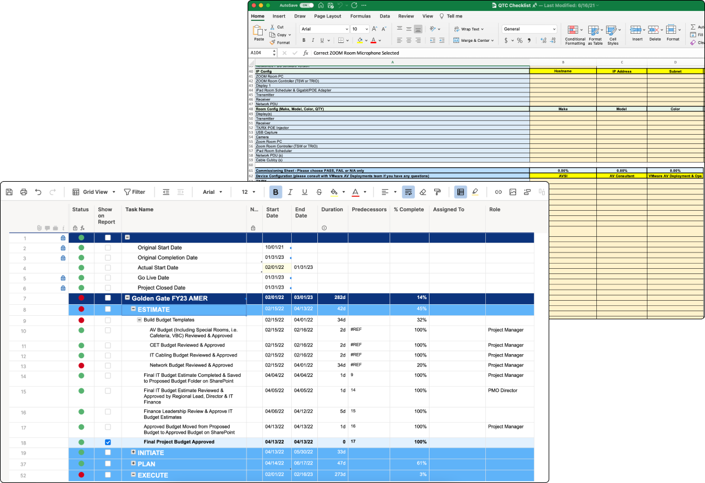
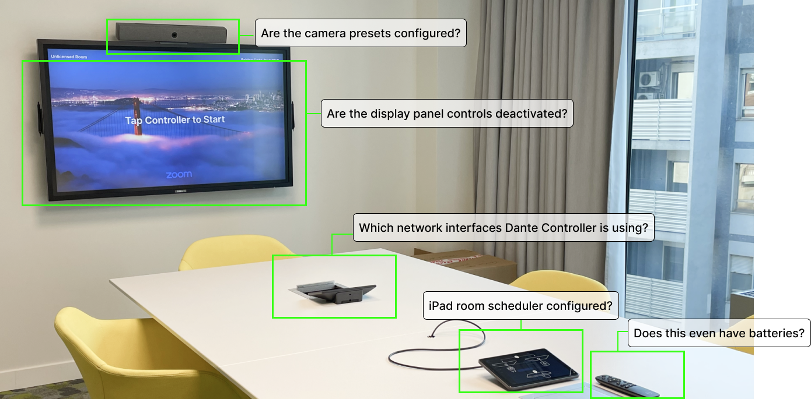
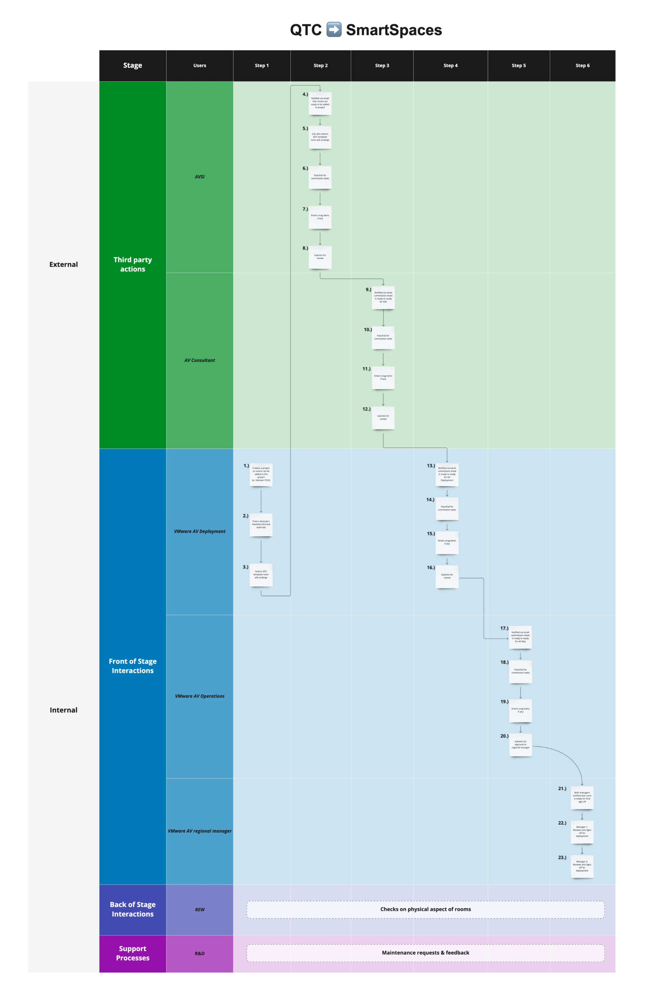
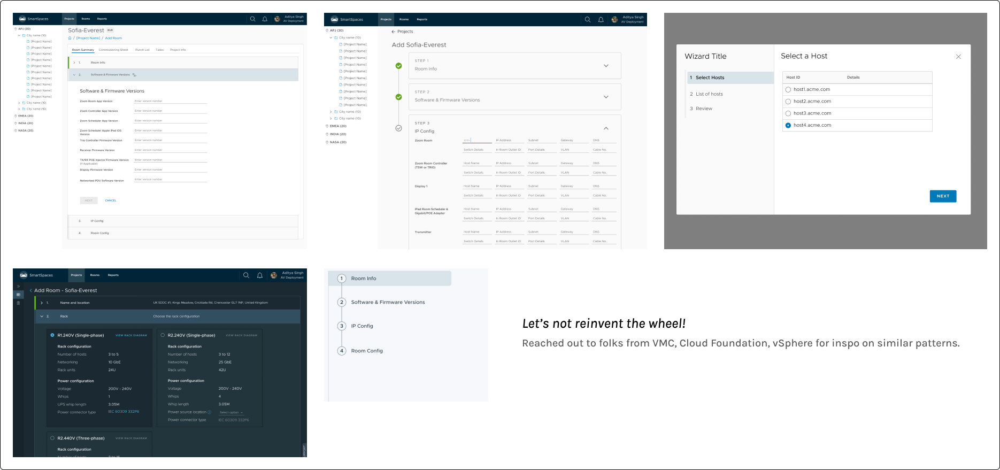
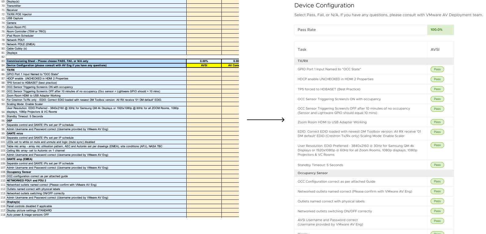
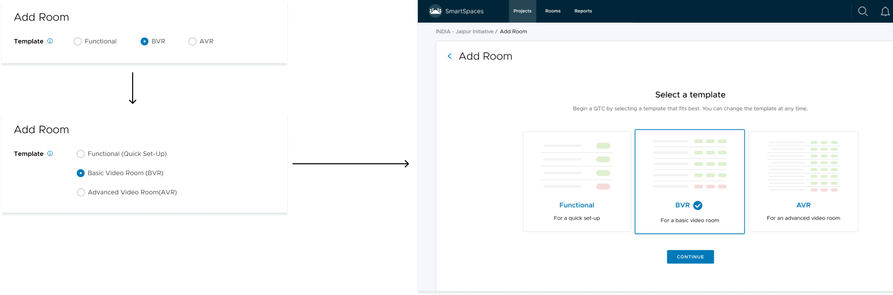
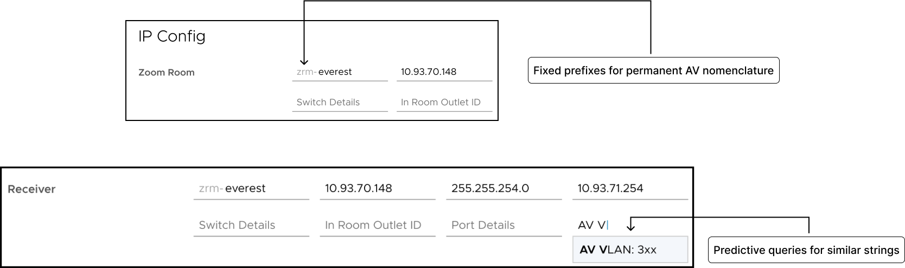
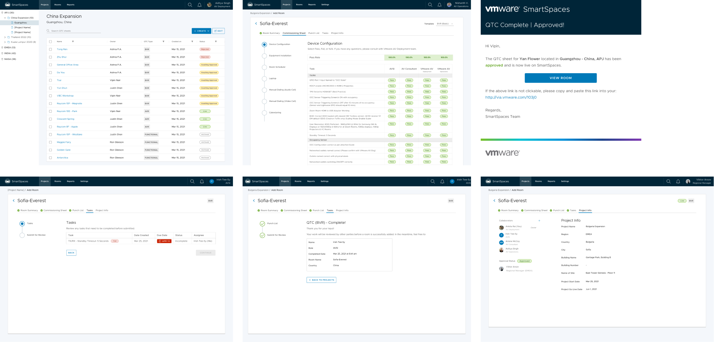

Project Details
Type: Project Management, Conference Room Deployment, AV Commissioning
Company: VMware
Platform: Web, Tablet Responsive, iOS/Android
Duration: May 2021 - Dec 2021 (Q2-Q4)
Tools: Figma, Dovetail
Role: Sole UX Designer
Summary
SmartSpaces was the main project I worked on throughout my time at VMware as the sole designer.
This tool was used by our Audiovisual (AV) team, IT, and third party consultants to manage current over 1,817 conference rooms across VMware's global offices. I designed a way for new conference rooms to be added, approved, and deployed to production with multiple AV roles involved on deck.
This feature was made up of smaller parts that relied on the other in order that had to be launched all together once we met a high quality than other projects where smaller iterations shipped are okay.
Background
When you're setting up a PC from scratch or installing a new surround-sound system to your TV, some of us are following Youtube tutorials and Reddit threads while some others out there are threading wires and plugs to what fits which socket. Luckily unlike us, there are trained professionals out there that know why this Cat5e RJ45 Flat Ethernet cable is best suited if electrical interference happens or how to achieve low latency on a populated floor on a mass scale.
Commercial AV installation is complex and what most of us take for granted unless anything in a conference room doesn't work in our favor. When we walk into our office's big conference room, we're pleased by the neatness and array of colorful chairs. Once we plug in the USB-C to our Macbook Pro, something better show up on the big screen!
So when it comes to VMware - 40,000 employees, 41 office locations across 24 countries globally (so far), there’s over 1,800 conference rooms!
With around 200 AV employees (+ ~500 IT Support to make up for software troubleshooting), managing conference rooms can get chaotic from end-to-end. Initially SmartSpaces was created to automate the health of conference rooms by making sure all software is up to date and all hardware is working. In the later version built for legacy, you would log into SmartSpaces and it would display the status of the room that might need maintenance then you can also pull activity reports.

Opportunity
We wanted to evolve it to focus more than just maintenance with the solid AV team VMware has, the IT solutions we innovate with, and the bandwidth our product team had.
Part of our BU's mission is to improve employee productivity and it came to our team's attention from direct user feedback that most of their pain points came from deploying a room.
🚩 Problem
A problem we found just by understanding the day-to-day of our AV teams was that a major task in their responsibilities held the most friction. This is called Quality Test & Commission or QTC. (We'll be calling it QTC from then on!)
QTC is when AV employees have to be sure a new conference room meets a certain quality and pass all criteria by several critical AV roles before it’s out to production for it to be used by employees. Unfortunately the QTC sheets to mark room performance were scattered across different hubs.

When the AV team performs a Quality Test & Commission (QTC) for a new room, they lose time delegating hand-offs to multiple parties across different repos.
Goal
How do we build a unified QTC process to ensure conference rooms are efficiently deployed?

Discovery
As a team, we had to spend a long of time in the unknown together since we didn’t know much about this QTC process initially. We were mostly aware of the maintenance and troubleshooting of a conference room, not the adding.
Since this was during COVID, I couldn't field research an AV employee setting up a new room, so from remote interviews with AV employees, I discovered the following:
- Low security for collaborators
Usage of Excel and Smartsheets made it easy to edit and manipulate data to meet the PASS requirement.
- Parties don’t check back on QTC sheets in time
Manual hand-offs via Slack, Teams, and Email would get slow feedback, even longer if external parties were involved.
- No fit and low stability in project management tools
Excel, Smartsheets, and other project management are too broad for the AV team scope. Also time-consuming to hop onto new platforms depending on IT decisions and copy + paste info.
- Job security feels at threat
Annual job performance is dependent on room deployment. If a room is deployed too late or doesn’t pass in time, it’s an anxiety-inducer on the AV team.
Define
Included in my presentation, I listed the Business vs. User Goals so stakeholders knew what was at stake if we allowed the resources for a solution.
Business Goals
- Improve internal business processes
- Enable employee productivity
- Uphold real estate quality and reputation
- Prepare for re-opening of offices as COVID subsides
User Goals
- Frictionless deployment of new conference rooms
- Meet quota of room deployment
- Commissioning tasks to be easier, simpler
- To feel confident, competent in their workflow
Proposed Solutions
After the initial discovery, I synthesized key personas of the main roles involved in the QTC process and proposed a solution for the roadmap to consider integrating the QTC process into SmartSpaces to stakeholders and XFNs which involved listing pros and cons. These personas were modified from what we already had.
Aligning XFNs & Stakeholders
Once it was considered, it was back to researching to dissect the details of the QTC process. I conducted an internal service blueprint workshop with stakeholders and SMEs to visualize the different touchpoints by different roles at each stage that leads to a successful room deployment. This was necessary because each stakeholder and SME knew most about different points of the journey.
There is where I can genuinely say my time at VMware strengthened my workshop facilitation and creation skills.

Product Roadmap
We synthesized main parts of the process to core features and I mapped out where this could fit in the IA. For this project, we weren’t really aiming for an MVP. QTC is a heavy process of its own that needed to be almost fully fleshed out to a quality before release.
Key feature elements that were approved to the roadmap from alignment with the team:
- Project Management - Visibility on status of current project (Ex: What stage it’s on) for transparency across all parties, removes Excel & Smartsheet repos
- In-App & Email Notifications - Ensures timely completions of processes across parties to remove manual hand-offs and pings
- Flexible QTC Templates - Accommodates data to tailor to different tiers of conference rooms and quick set-ups of new ones
- Deployment for Health Automation - Once final approval is submitted by managers, health of rooms are automatically scanned and managed into the Rooms page
Design Explorations (Sample) - Stepper
Most design explorations took place in the layout of the overall journey.
Since this is a heavy step-by-step process and I'm anti-reinventing the wheel, I was sure out of the many IT enterprise products VMware has that there existed a layout that could fit.
So with products like vSphere, Tanzu, VMC, vRealize, I tried out their accordian steppers, timeline steppers, steppers that floated somewhere fixed at the bottom, and even wizards which were the the worst fit. They helped as inspirations but not entirely a 1:1 match with our use case.

Trade-offs (Sample) - Simplifying commissioning sheets
For trade-offs, the majority of it and the discussions around it took place on condensing the fields.
On the left is just a small sample of the spreadsheet that needed to be filled out entirely. There was over 300+ fields that would be a monster to go through again in SmartSpaces. So first, we eliminated duplicates. Fields that were duplicated in different sections. There was a lot of pushback because as a legacy process, no one wants to change anything although they'll verbally say they're ready for change.
We had to push for rounds of condensing the fields as much as we could.

User Testing
From user tests, the initial reaction was a blend of skepticism and delightfulness. “Wow, the AV team at VMware is getting this level of care to have a tool just for their own processes?” (which means our team is following our org's values of understanding each other!)
Another feedback that was explored was having some sort of preset templates in their QTC sheets since the original sheet contains around 300+ fields and some conference rooms have most of those fields optional while others just needed a quick set-up to set as a placeholder in the directory. This led to improving the previous trade-off issue.
Lastly, it was already on our solution and the prototype to have alerts but users voiced concerns that the alerts needed to be even more prevalent in all parts of the process. For example, although you’re the final sign off of the QTC process, you’d still like to be alerted of your project member’s progress too.
Iterations from User Tests (1) - Introducing a new feature to even experienced AV roles

Introducing different QTC templates was already a new concept, so the design evolved from user tests on how it would appear when you first add a room to a project that’s going to go through the QTC process.
It went from a simple, use the tooltip if you don’t get it, to a little more context, and finally, a more visual idea of what each template is used for.
Iterations from User Tests (2) - Predictive queries

Another learning from user tests that was approved was creating predictive queries and a fixed query prefix for fields that were using repetitive and used similar characters from past input. This would come in handy in making it faster completing the QTC process but a feature that was added later on.
Final Designs

This is a small sample of the many screens used for the QTC process. Walkthrough available upon request.
Impact (FY23Q2)
Quantitative Impact:
- 2.13 (hr) decrease in Average Collaborator Response Time - As opposed to waiting days or a week to respond.
- 21.5% lower delay in New Room Deployment - This was a drastic improvement that I was skeptical of the number but it made sense if you tackle the most crucial, frustrating steps.
- 74 NPS - Still in the healthy range.
Survey Feedback:
- 81% users prefer the QTC process using SmartSpaces
- 76% users felt end-to-end experience is intuitive
- 88% users felt confident this is the right direction of SmartSpaces long-term
Again, this was the largest feature I'd ever done with SmartSpaces so it was rewarding to see positive results. My team is globally distributed (Indie, Bulgaria, Midwest) so the time to align is limited so those positive results took grit for alignment. Moving forward, chunking up the features, and making sure each AV role truly benefited from the role attributed to the success.